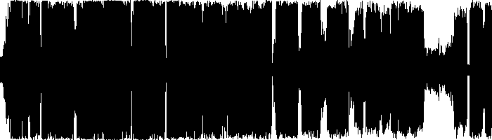

| VIBEMIX050: | SHADOW SELF | ||
|---|---|---|---|
| 01. | Cris B | Mind, Body & Soul (DJ Hype Remix) | 00:00 |
| 02. | One Soul | Beauty | 05:50 |
| 03. | Kutta & Al X Bleek | Strictly Red | 11:17 |
| 04. | Neotech | Valves | 18:15 |
| 05. | Decoder | In My Dreams | 21:55 |
| 06. | Decoder | Time Square | 27:12 |
| 07. | Dylan & B Key | Time Travel | 33:25 |
| 08. | John B | Sight Beyond | 39:14 |
| 09. | Jonny L | Common Origin | 46:46 |
| 10. | Rob & Goldie | Shadow (Process Mix) | 52:03 |
| ℗ & © 2024 | VIBERATIONS REC. |